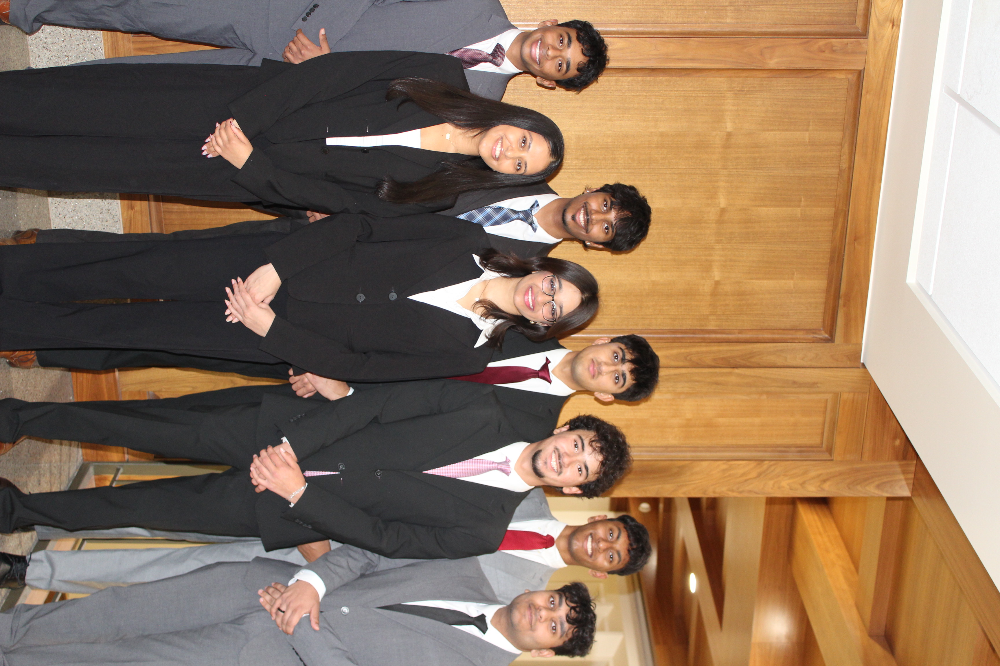
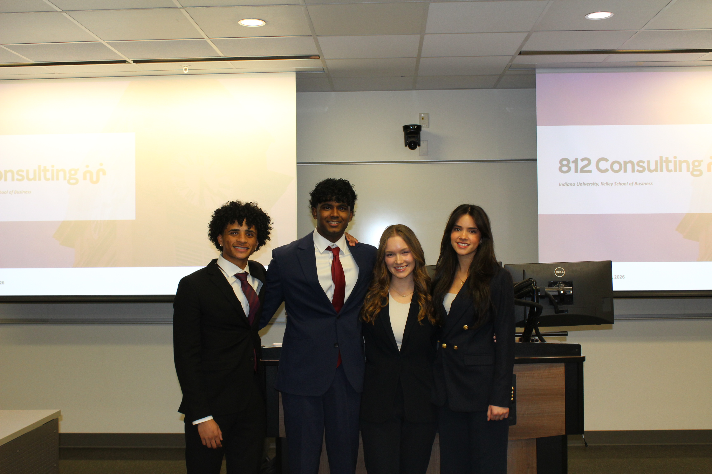

Client-Facing Work
Members contribute to engagements with businesses and organizations, building confidence through real deliverables.

About Us
A student consulting organization built for client impact, mentorship, and real growth at IU.
Our Foundation
812 Consulting began as a student-led effort to give Indiana University students more than classroom exposure to business. The organization was built around a simple idea: students learn fastest when they work on real problems, with real teams, for real clients.
Since its early client engagements, 812 has grown into an application-based community where members practice research, analysis, communication, and leadership while supporting organizations across a wide range of industries.
Mission Evolution
812's mission has expanded with its members. The club still prepares students for client-facing work, but it is not only a pre-professional organization for consulting careers. Members join to become sharper thinkers, better teammates, stronger communicators, and more confident leaders.
That is why mentorship and friendship sit beside project work. The club exists to create an environment where motivated students can challenge one another, learn from one another, and leave with skills they can carry into any career path.
What Makes Us Distinctive
Members contribute to engagements with businesses and organizations, building confidence through real deliverables.
New and returning members learn through feedback, training, peer support, and leadership from experienced students.
812 is intentionally social and collaborative, so professional growth feels connected to friendship and belonging.

Why Students Join
Students come to 812 because they want a serious but supportive environment. On projects, members learn how to break down ambiguous questions, conduct research, synthesize findings, and present a point of view. Outside of projects, they build friendships and habits that make professional development feel less intimidating and more human.
Meet The Members